Project 3: Fun with Flow Models
Ray Sun · CS 180 · Fall 2026
Part A explores image generation and editing with PixNerd. Part B builds and trains UNets for single-step denoising and flow matching on MNIST.
Part A · Part B · Website PDF
Part A · Exploring the Power of Flow Models
Pretrained PixNerd · 512 × 512 images · float32 states and predictions
1.1 · Constructing noisy training inputs
I used my nighttime bridge photograph for Sections 1.1-1.5. The input is center-cropped and resized to 512 × 512, with RGB values normalized to [−1, 1]. I sampled one Gaussian noise tensor with seed 180 and reused it at all three times.
xt = (1 − t)ε + tx1


At t = 0.25, the image is dominated by noise and the bridge is difficult to recognize. At t = 0.50, the tower and lights become visible. At t = 0.75, most of the original structure remains, although the sky and dark foreground still contain noise. Increasing t increases the contribution of the original image.
1.2 · Classical denoising
For the classical baseline, I first divided the noisy input by t to restore the image amplitude, then applied Gaussian blur. I tried σ = 1, 2, 4, 8, 16 and selected the candidate with the lowest mean squared error against the known original, before display clipping.
t = 0.25

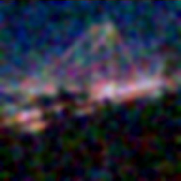
t = 0.50


t = 0.75

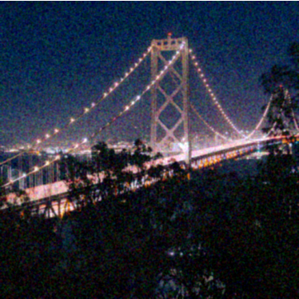
The selected blur becomes weaker as the input becomes cleaner. At t = 0.25, σ = 8 reduces the noise but also removes the bridge cables and fine lights. At t = 0.50, σ = 4 preserves more of the tower, though the result is still visibly blurred. At t = 0.75, σ = 1 retains much more detail. This shows the tradeoff between suppressing noise and preserving edges.
1.3 · One-step denoising
I used the prompt “a high quality photo” to predict the velocity at each noisy input. One-step denoising uses that single prediction for the entire remaining interval to t = 1.
x̂1 = xt + (1 − t)vθ(xt, t, c)
t = 0.25


The model recovers recognizable bridge structure even at t = 0.25, where Gaussian blur leaves mostly broad color patches. However, this low-time estimate is soft, particularly around the cables and foreground. The estimates at t = 0.50 and 0.75 retain sharper lights and more of the original structure. The model can infer plausible detail, but a plausible reconstruction is not necessarily an exact recovery of the original pixels.
1.4 · Visualizing velocity
I compared the model’s proposed update with the exact update available from the original image and saved noise. The original is shown in Section 1.1. At each pixel, I squared the difference between the two updates, averaged across RGB, and took the square root.
Δpred = (1 − t)v̂, Δgt = (1 − t)(x1 − ε) = x1 − xt
E = √meanRGB[(Δpred − Δgt)²]
All predicted and ground-truth updates use the same symmetric RGB scale, with zero at middle gray. The heatmaps share one linear scale across all three times; errors are computed before display scaling or clipping.
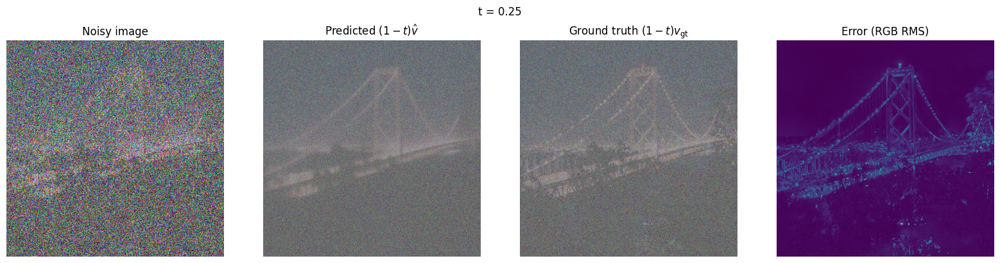
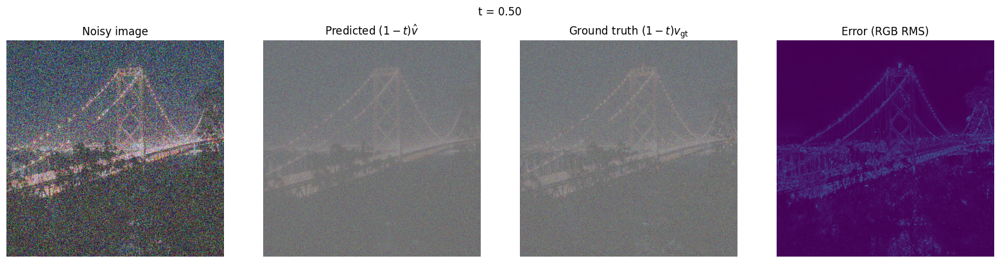
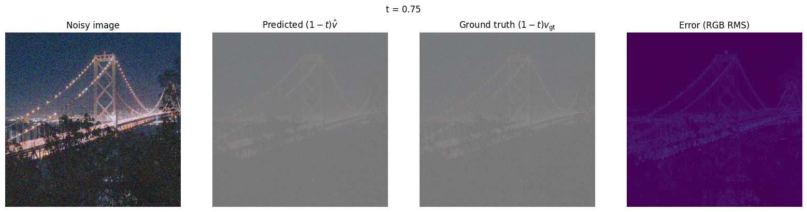
The predicted and exact updates have similar broad structure, but the error maps trace the bridge tower, cables, lights, and foreground detail. The t = 0.25 error map is more pronounced than those at later times. Fine structures are harder to reconstruct accurately when the input contains less image information.
1.5 · Iterative denoising with Euler sampling
Starting from the saved t = 0.50 input, I used 25 Euler updates with h = 0.02. Each update recomputes the velocity using the current image and time. The sampler shortens the last step when needed to end at exactly t = 1.
xt+h = xt + hvθ(xt, t, c)


Noise gradually disappears as the trajectory approaches t = 1. Gaussian blur has the softest edges and loses the most detail. Both learned methods recover the bridge much more clearly. The one-step and Euler results are visually similar at this starting time, so this example does not show a dramatic advantage for iterative sampling. Euler does allow the predicted direction to change as the image becomes cleaner.
1.6 · Generating images from noise
I started from five independent Gaussian noise tensors, using seeds 180-184, and integrated from t = 0 to t = 1 with 50 Euler updates. These samples use ordinary conditional prediction with “a high quality photo”, without CFG.
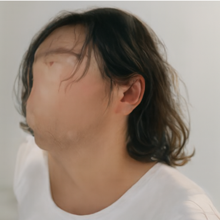
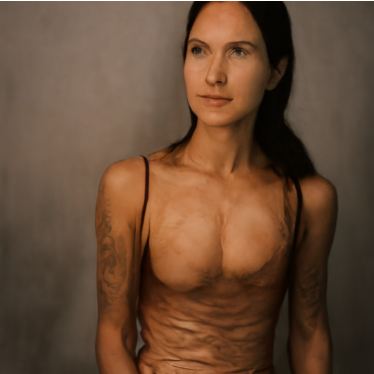
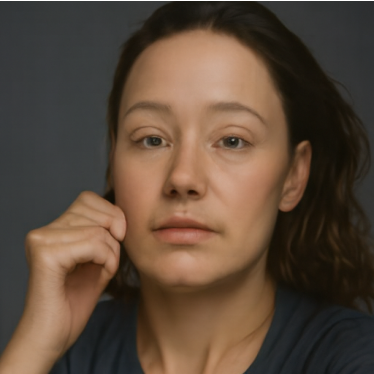
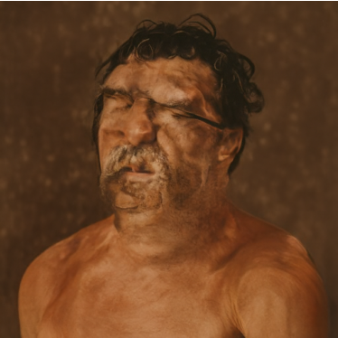
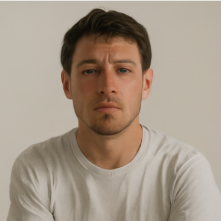
All five samples depict people, even though the prompt does not specify a subject. Several have visible artifacts: seed 180 has an incomplete face, seed 181 has distorted anatomy, and seed 183 has a rough, painterly appearance. Seeds 182 and 184 look more like conventional portraits. In these samples, the generic photo prompt favors people rather than producing a broad range of scene types.
2.1 · Classifier-free guidance
I evaluated the same state and time with the photo prompt and an empty prompt, then amplified the difference between their velocities. I used w = 7 and h = 0.02, reusing the exact five initial noises from Section 1.6.
vCFG = vc + w(vc − vu)
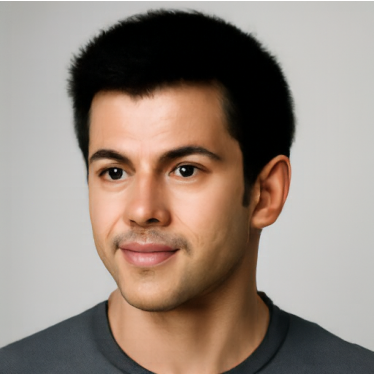
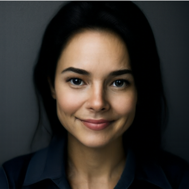
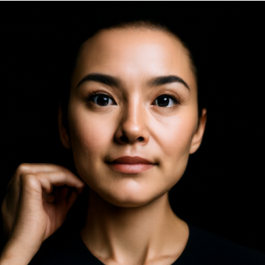
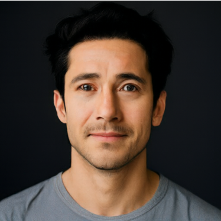
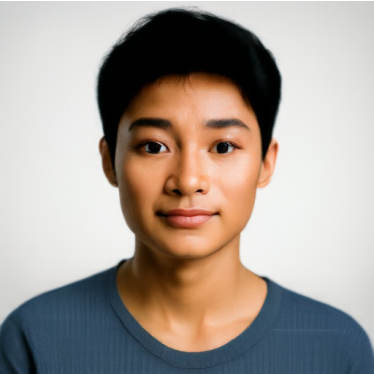
Compared with the corresponding ordinary conditional samples above, the CFG images have clearer facial features, cleaner lighting, and fewer obvious anatomical artifacts. The incomplete face at seed 180 becomes a recognizable portrait. However, all five results remain portraits, and their compositions are more similar. Guidance improves the photographic appearance in this set, but it does not introduce more subject variety.
3.1 · Image-to-image editing
For each input, I constructed xstart = (1 − tstart)ε + tstartx1, then sampled to t = 1 using “a high quality photo”, w = 7, and h = 0.02. Every input uses the same seed-180 noise and all seven starting times: 0.02, 0.04, 0.06, 0.10, 0.14, 0.25, 0.50.
Campanile
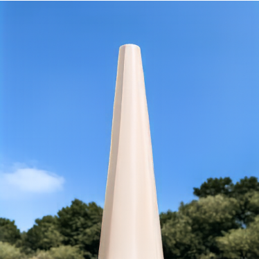
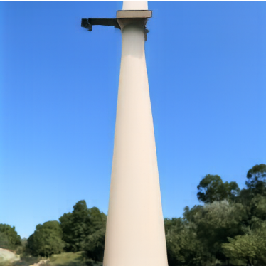
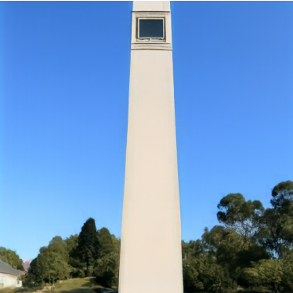
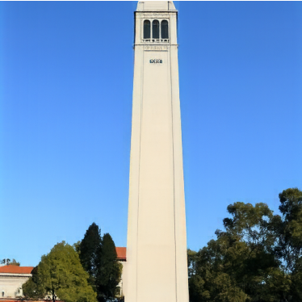
The low-time outputs preserve a pale vertical form against the blue sky, but replace the tower with simplified columns. The upper structure becomes more architectural at t = 0.10 and 0.14. At t = 0.25 the belfry returns, and at t = 0.50 the clock and stone texture are much closer to the original.
My bridge photograph 1
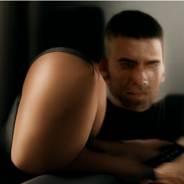
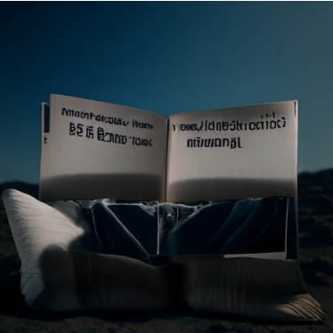
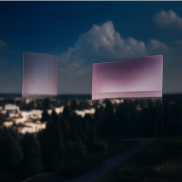
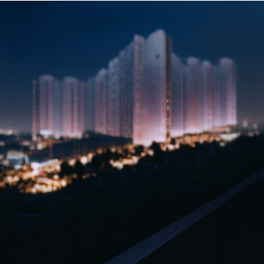
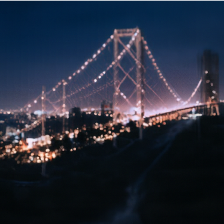
At t = 0.02-0.06, the results become unrelated subjects, including a person, a close-up hand, and furniture. The generic photo prompt does not require the output to remain a bridge. At t = 0.10-0.14, illuminated structures return but are interpreted as panels or buildings. At t = 0.25 and 0.50, the bridge is recognizable again.
My bridge photograph 2
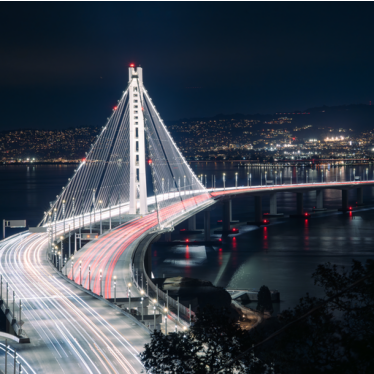
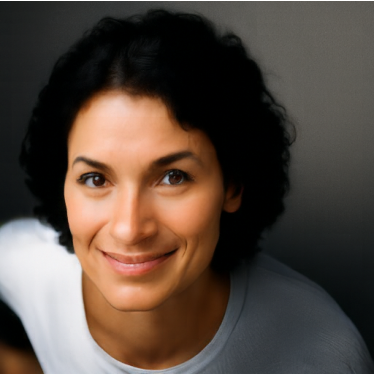
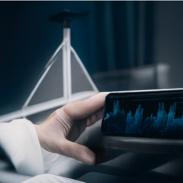
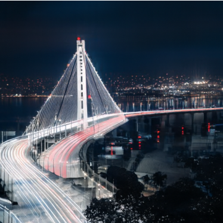
The lowest starting times produce portraits instead of the bridge. Around t = 0.10 and 0.14, the triangular tower shape returns in invented scenes. At t = 0.25 the model restores a bridge but changes the surrounding city and water. At t = 0.50 it preserves much more of the original tower and curved roadway.
3.1 · Hand-drawn and web images
I repeated the same seven-time sweep for one web illustration and two drawings of my own, using the same generic photo prompt and sampler settings.
Web image: illustrated bed
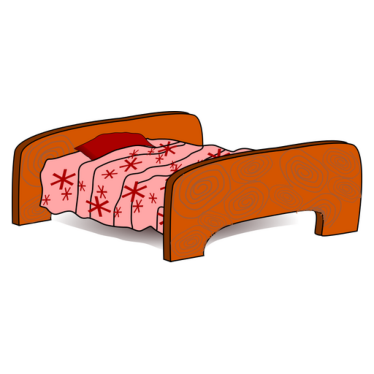
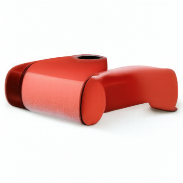
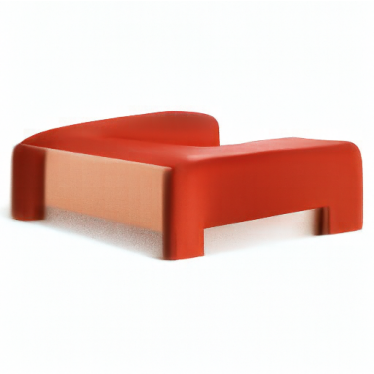
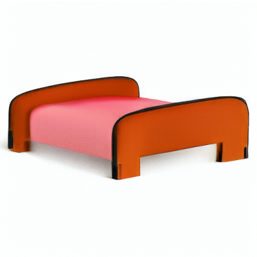
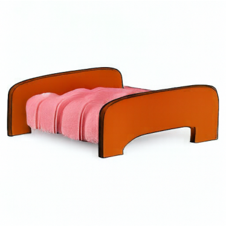
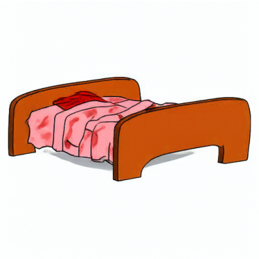
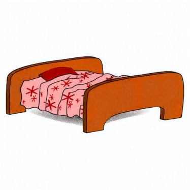
At t = 0.02, the bed collapses into a red rectangular shape. At t = 0.04-0.06, the model makes rounded, three-dimensional furniture. At t = 0.10-0.14, the headboard, footboard, and bedding are recognizable and have more photographic shading. At t = 0.25-0.50, the outlines and patterned blanket increasingly resemble the original illustration.
Bed illustration by biswajyotim, Openclipart. Resized and centered on a white 512 × 512 canvas.
Drawing 1: person adjusting glasses
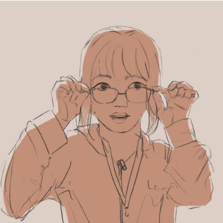
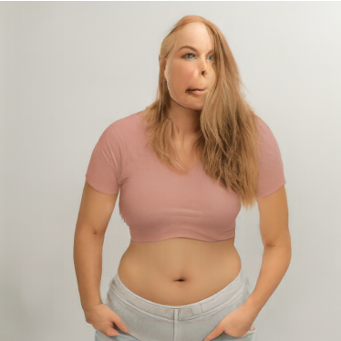
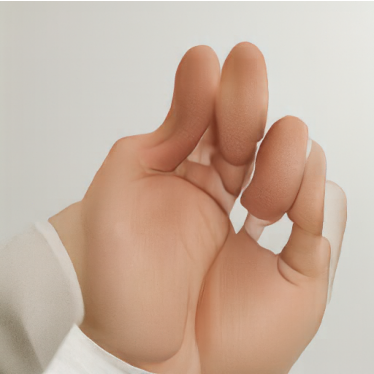
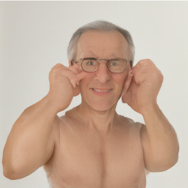
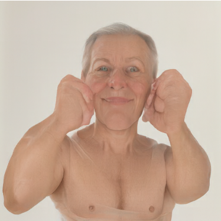
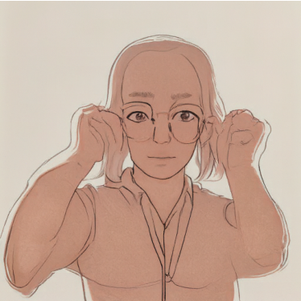
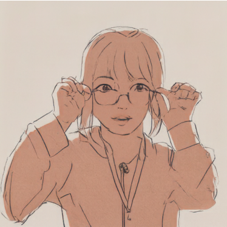
The lowest starting times produce different people, and t = 0.06 produces an isolated hand. At t = 0.10-0.14, the model produces photographic people with hands near their faces, retaining part of the pose while changing the person’s appearance. At t = 0.25 and 0.50, the result remains closer to the original drawing style and composition.
Drawing 2: pale portrait sketch
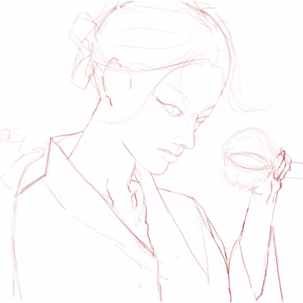
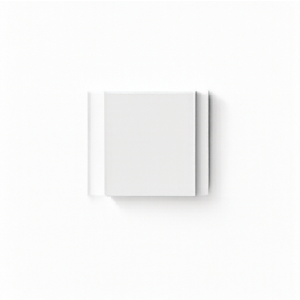
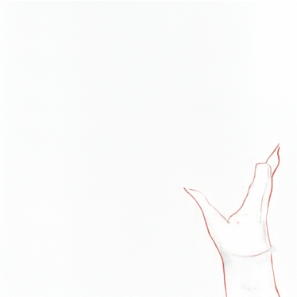
This drawing has much weaker contrast. At t = 0.02, the model produces a small white rectangular object, while several other low-time outputs are almost entirely white. A few lines survive at t = 0.25, and the portrait becomes recognizable again at t = 0.50. This example does not produce a convincing photographic conversion; its faint lines provide little structure after noise is introduced.
3.2 · Text-guided image editing
I reused the Campanile and my two bridge photographs with the same seven starting times, seed, guidance weight, and step size. The change is the conditional prompt, which now describes a specific edit.
Campanile → beer can
Prompt: “a photograph of a can of beer”
At low starting times, the tower becomes a recognizable beverage can with a metallic rim and printed label. At intermediate times, the can becomes unusually tall and starts to share the Campanile’s proportions. At t = 0.25, the tower has label-like markings near its top. At t = 0.50, the original architecture dominates and the beer-can edit is much weaker.
Bridge photograph 1 → mountains
Prompt: “mountains at night in deep blue sky”
At t = 0.02-0.14, mountains replace the bridge while retaining a dark blue palette. At t = 0.25, the lit bridge shapes are reinterpreted as a mountain ridge above a dark foreground. At t = 0.50, the bridge returns almost unchanged. The intermediate output connects the source composition with the requested subject more strongly than either endpoint.
Bridge photograph 2 → glowing snake
Prompt: “a glowing bright snake at night”
The lowest times produce brightly colored snakes with very little bridge structure remaining. At t = 0.10-0.25, the snake and bridge coexist: the bridge tower survives in the background while the curving foreground becomes a snake. At t = 0.50, the roadway and tower are much closer to the original, and the requested snake is no longer clearly visible.
3.3 · Visual anagrams
At each step, I computed one CFG velocity for the upright image and another for its 180° rotation using the second prompt. I rotated the second velocity back before averaging the two, so both updates refer to the same pixel positions. I sampled from noise with w = 7 and h = 0.02.
v = [vCFG(x, t, ca) + R(vCFG(R(x), t, cb))] / 2
Illusion 1 · seed 180
Upright, the image forms an old man’s face with a bright forehead and dark eye sockets. Rotated, the bright forehead becomes the fire, and figures appear around it. The shared orange lighting and dark background help both readings coexist, although small faces remain visible inside the upright portrait.
Illusion 2 · seed 181
In the upright view, pointed contours form snowy peaks and roofs. Rotating the same image reveals a horse’s head and body. The horse is easier to recognize than the village, so the two interpretations are not equally strong. The pencil-like texture allows the same edges to serve both subjects.
3.4 · Hybrid images
For each Euler update, I combined the low-frequency part of the distant prompt’s CFG velocity with the high-frequency part of the close prompt’s CFG velocity. The low-pass filter uses a 265 × 265 Gaussian kernel with σ = 16. Both predictions use the same image and time, with w = 7 and h = 0.02.
v = G16(vdistant) + vclose − G16(vclose)
Hybrid 1 · seed 180


The waterfall is clear at full size, with vertical streams, dark rocks, and trees. In the reduced view, the broad dark and pale regions become more apparent, but I do not see a clearly defined skull. The close-view subject is stronger than the intended distant-view subject, so this is a limited hybrid rather than a clean perceptual switch.
Hybrid 2 · seed 181


The full-size image clearly shows tree trunks and branches. At reduced size, the grouped canopies and pale regions above them suggest a face-like arrangement, but the cat is ambiguous and the forest remains visible. This result shows that separating the velocity frequencies does not guarantee two equally recognizable subjects.
What I learned
The starting time controls how much the model can rely on the original image. Small starting times allow stronger prompt-driven changes, but they can also remove the subject completely. Larger starting times preserve the input but leave less room for editing. The drawings and hybrids also showed that a correct sampling procedure does not guarantee a convincing visual effect: input contrast, prompt choice, and the compatibility of the two subjects still matter.
Part B · Flow Matching from Scratch
I trained UNets on the 60,000 MNIST training images, with pixels in [0, 1]. Test images are used only for evaluation. First I trained a single-step denoiser, then time-conditioned and class-conditioned models that generate digits by following a learned flow.
The UNet uses convolution, batch normalization, and GELU blocks. Its spatial resolution follows 28 → 14 → 7 → 1 → 7 → 14 → 28, with concatenated skip connections from the encoder to the decoder. The final convolution produces one grayscale channel.
1.2 & 1.2.2 · Noise levels and OOD testing
For each digit, I keep the clean test image and Gaussian noise tensor fixed while changing σ. The left grid shows x + σε; the right shows the outputs of the denoiser trained at σ = 0.5 for five epochs. Rows correspond to digits 0–9, and both grids use the same row and column order.


The model handles nearby noise levels reasonably well, although it smooths even clean inputs. At σ = 0.8 and 1.0, strokes become distorted and residual noise appears. Training at one noise level does not make the model reliable at every noise level.
1.2.1 · Training a single-step denoiser
The input is x + 0.5ε and the target is x. I use D = 128, batch size 256, Adam with learning rate 10−4, and five epochs. The training set is shuffled, and fresh noise is sampled for each batch.


The first epoch already recovers most digit shapes. By epoch 5, the outputs have cleaner, more continuous strokes, while some fine details remain smoothed. Over all 10,000 test images, pixel MSE falls from 0.25007 for the noisy input to 0.00828 after denoising.
1.2.3 · Denoising pure noise
I train a fresh D = 128 UNet with the same batch size, optimizer, learning rate, and five-epoch schedule. This time, each input is independent Gaussian noise ε and its target is a training digit. The two sample grids reuse the same held-out noise inputs.


The outputs are nearly identical blurry shapes, with a bright oval center and faint overlapping strokes. They resemble an average of several digits rather than distinct samples of 0–9. Because the noise and target are independent, the input gives no information about which digit to predict. The MSE-optimal prediction is E[x | ε] = E[x], the pixelwise mean of the training images. Averaging the different digit shapes explains both the blur and the lack of variation.
2.1–2.2 · Time-conditioned flow matching
I sample x0 from Gaussian noise, x1 from MNIST, and t uniformly from [0, 1]. The network learns the velocity along a straight path between them.
xt = (1 − t)x0 + tx1 · target velocity = x1 − x0
Two fully connected blocks embed t and multiply the unflattened bottleneck and first upsampling block. I use D = 64, batch size 64, ten epochs, and Adam starting at 10−2. After each epoch, the learning rate is multiplied by 0.11/10, reaching 10−3 after the final scheduler step. Both noise and time are resampled for each batch.

2.3 · Sampling without class labels
Each checkpoint starts from the same 40 Gaussian noise images (seed 191). I take 50 Euler steps, x ← x + uθ(x, t)/50, from t = 0 to 1.


Epoch 1 produces broken and ambiguous strokes. By epoch 5, many recognizable digits appear; epoch 10 cleans up more of the outlines. Some samples still have extra strokes or unclear identities. The model produces varied digits, but it has no label telling it which digit to generate.
2.4–2.5 · Adding class conditioning
I embed a ten-dimensional one-hot digit label with two additional fully connected blocks. At the bottleneck and first upsampling stage, conditioning becomes c1 · unflatten + t1 and c2 · up1 + t2. For 10% of training examples, the label vector is set to zero so the same network learns an unconditional prediction.
The architecture width, batch size, ten-epoch schedule, Adam learning rate, and exponential decay match the time-conditioned experiment. The training objective still predicts x1 − x0.

2.6 · Class-guided sampling
Each row requests digits 0–9, giving four instances of every digit. All checkpoints use the same initial noise (seed 201), 300 Euler steps, and guidance scale γ = 5.
uguided = uuncond + 5(ucond − uuncond)


The requested classes are visible even at epoch 1, although several strokes are noisy or incomplete. Epochs 5 and 10 give cleaner, more consistent digits in the requested columns. Class conditioning provides much more control than the time-only model.
2.6 · Removing the scheduler
I train another model from scratch with a constant Adam learning rate of 10−3. This lower fixed rate replaces the scheduled run’s larger initial rate of 10−2. The initialization seed, data order, architecture, batch size, label dropout, and ten-epoch budget are kept the same. Sampling again uses seed 201, 300 Euler steps, and γ = 5.


| Class-conditioned training | Epoch 10 mean training MSE |
|---|---|
| Exponential decay, 10−2 → 10−3 | 0.084764 |
| Constant 10−3 | 0.084282 |
The constant-rate model already produces cleaner digits at epoch 1. By epoch 10, both runs produce clear 0–9 grids with similar visual quality, and their final training losses are close. For this run, a smaller constant learning rate maintains comparable results without a scheduler. This is a visual and training-loss comparison, not a test-set measure of generative quality.